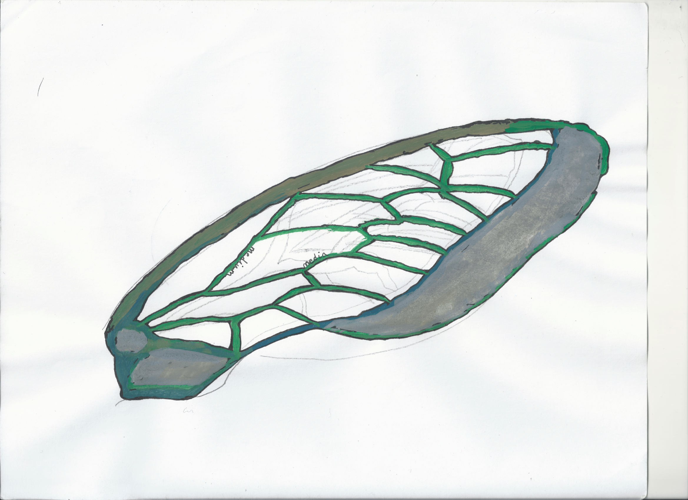

[dans l’épisode précédent : on a établi le texte comme média, rendant de fait la définition du média nécessaire, et le grand danger de l’abstraction]
---
title: "Medium is Media"
chapitre: 1
section: 2
---
---
title: "In media res"
chapitre: 1
section: 2
sous-section: 1
---
In media res #
où on tente d’établir une définition du média et où l’on précise notre positionnement théorique
Media Rasa #
Tantôt dispositif [Agamben], artefact [Zacklad], message [McLuhan], milieu [Méchoulan], conjonctures [Vitali-Rosati et Larrue], ou même véhicule [Baudelaire] [etc.], le média aura décliné ses peaux au fil des théories au point peut-être d’avoir épuisé ses mues. Délimiter le média, disséquer son anatomie, comprendre son évolution et identifier ses disparités comme ses connivences au fil des époques et des technologies sont quelque uns (des nombreux) axes qui ont engagé plusieurs chercheur.e.s, même ceux ou celles qui ont en quelque sorte tenté de naviguer entre les épines d’une définition précise en recouvrant un voile d’imprécision [McLuhan selon Eco, 1987, p. 138 qui en fait tantôt le contenu, le contenant ou même le processus liant les deux]. Chose infime, entre de l’entre l’entre [Méchoulan par Vitali-Rosati et JML], ou universel [englobant écriture, vêtement, automobile, ordinateur, femme chez McLuhan], le média semble être tantôt l’aiguille et la masse la dissimulant. Les différentes traditions théoriques et linguistiques qui ont émergé (principalement depuis le XX^e^ siècle), que l’on réunira pour l’instant de manière générale comme la pensée des médias, se trouvent partager parfois des points d’accroches, des connivences riches d’intimité mais se distinguent aussi notamment selon leur terrain disciplinaire d’émergence. Je m’engage ici dans la même quête que ces archéologues, sociologues, philosophes, poètes des médias pour y trouver des points d’encrage à une réflexion et une posture de recherche-création nécessaire à mon entreprise textuelle.
Avant d’entrer dans la chair de ces théories, tentons un exercice, faisons tabula rasa du média : restons en deçà de ce que nous connaissons de lui, mettons de côté tout les imaginaires, posons de côté (symboliquement du moins) les livres lourds des synonymies et imageries que ce terme charrie, plaçons-nous pour quelques lignes en terrain inconnu.
[#creation] Le poème du média, qui se construit au fur et à mesure de la réflexion sur le terme. 1ère étape : jeu de typographie pour créer un ambigramme visuel entre \me.djɔm\ et \me.dja\
Nervure - preuve de concept
Module Nervure : La création imite ici le principe du calligramme en l’automatisant. La réflexion autour du médias sera insérée automatiquement pour former une image, celle d’une aile de cigale où les contours ne sont plus constitués par le trait mais par le texte.
Ce jeu, qui pourrait s’apparenter à un exercice de style littéraire, n’a d’intérêt ici que celui de rebooter l’esprit pour tenter d’entrer une nouvelle fois dans le média : un arrangement de matières, ce que souhaite traduire la poétique l’ambigramme, qui peut se définir spatialement de multiples façons et où singulier et pluriel se confondent et se recouvrent. Car c’est par la question de la nomination que l’on entre dans le média : médium, média, médias, avec ou sans accent ? Revenons-aux livres que nous n’avions pas réélemment viré de la table de recherche. L’Oxford English Dictionary définit pour la première fois medium en tant que dérivé du latin postclassique media. Le pluriel était utilisé plusieurs siècles avant le singulier qui fut préféré par l’utilisation moderne pour désigner les arrêts vocaux de type [β], [γ] et [δ] pour le grec ancien1.
[#creation]: Le poème du média 2ème étape : grisement du composé typographique, jeu sur les arrêts des vocales. trait de voisement.
Considérées comme des occlusives voisées, les lettres du média sonnent par l’interruption car produites en obstruant l’air du chenal vocal, articulation qui fait vibrer les cordes vocales. Désignant largement trois saveurs littérales de voisement (bilabiale, vélaire et dentale), le média est sur le fil, entre l’expression et la rétention, et il fait sens par ce qui suit, par ce avec quoi il introduit. Astuce orthophonique, pause en bout de bouche et paradoxe d’un son par vibration d’un air pris entre deux états, il est cet arrêt vocal non aspiré permettant la bonne transmission et le respect de conventions rythmiques poétiques.
De la voix à la veine, il n’y a qu’une acception.
[#creation]: Le poème du média 3ème étape : transition vers le poème visuel. Jeu de transparence entre les étapes.
La réalité organique du média que traduisait déjà son premier sens, celui d’une typologie pour ces lettres dont la production sonore est un agencement particulier des chairs bucales se poursuit dans la deuxième entrée du terme proposée par l’Oxford English Dictionary transcrit un agencement de matières plus organiques : « la couche moyenne de la paroi d’un vaisseau sanguin ou lymphatique » et la troisième acception emboite en ce sens : « une veine principale (…) dans le schéma de base de la nervation des ailes d’insectes ».
Partagé par ces premiers lieux du média s’impose un sens qui sera ensuite assimilé comme le sens commun dans le latin moderne : l’entre, le milieu, ce qui fait lien. Comme à la frontière, n’étant ni une vocale tenue (les lettres [π], [κ] et [τ] sont des occlusives sourdes soit produites sans la vibration de la corde vocale), n’étant ni l’intima ou l’adventitia (les autres parties du vaisseau sanguin), le média est cet espace liminaire qui va peu à peu développer une vraie identité, au-delà de la dynamique de l’identification par élimination ou par non-adéquation. Si se distinguent deux branches sémantiques (une vocale, une organique), l’exercice de création proposé ici joue à faire se rejoindre les deux : le défi n’est pas seulement poétique – en tant que contrainte littéraire ou mur de notre labyrinthe – mais également conceptuel. Le recouvrement des significations d’origine (que l’on rencontrent aujourd’hui rarement car devenues largement obsolètes) marque tout ce que peut incarner le principe de l’articulation du média : jonction entre sang ou son, sens ou signes, arrangement physique spécifique, marge où se joue une action que l’on appelera médiation.
[#creation]: Le poème du média ou [Nervure] - état final et définitif
Nervure est une création qui se construit sur la force de repésentation du média pour considérer l'importance de la donnée sensible dans notre approche de cette construction théorique : « toute histoire des médias devrait s’accompagner d’une réflexion sur la sensibilité portée envers les médias, sur ce qui en eux fait rêver et imaginer, perceptible dans le geste même de les représenter » (Pinson 2012, 10 *L’Imaginaire médiatique*).
L’intermédiaire entre-deux #
où on développe l’imaginaire de la présence du média
Si l’on entre un peu plus dans l’entre, tout en demeurant encore distants des théories inévitables qui petit à petit se dessinent à l’horizon, la définition moderne du terme médium développe l’imaginaire autour de l’entre-deux qu’incarne une série de figure : le médium peut désigner l’incarnation de la fonction d’intermédiaire, poète, magicien, devin, figures qui permettent l’accès à un degré sinon subtil, du moins plus étroit ou imperceptible, qui transmettent des informations sinon hors-de-portée du commun.
La figure du médiateur est une composante importante : l’intermédiaire (celui qui est au centre de la médiation et qui est défini par celle-ci) ou le messager sont des tiers indispensables à toute communication en ce qu’ils portent d’un endroit à un autre et participent non seulement d’une interaction mais d’une institution [Krämer, Medium, Messenger, Transmission, 2015]. Système de transmission d’informations lointaines, la fonction du messager (des dieux ou du langage) a depuis la figure d’Orphée et la tradition platonicienne permit de définir l’éthos du poète comme un être inspiré à qui il revient de transmettre et traduire. Dans le long poème Les rayons et les ombres (1839), Victor Hugo développe la figue allégorique du poète et sa fonction (I) : dévoiler la vérité tout en refusant de la livrer sans ce voile qui la détermine, soit jouer l’authentique par l’artifice. La posture du poète, marquée par l’auteur à l’aide de formules antithétiques (s’exiler dans la foule, le silence afin d’entendre, l’ombre afin de voir le jour) et oxymores (luttes serviles, gazons des villes), les images synesthésiques (« entendre la nuit ») relèvent d’un sens entre plusieurs réalités. « Semeur », le poète l’est dans la mesure où il incarne cette figure entre deux états du monde (le poème décline les bipolarités des espaces [villes, campagnes], des statuts politiques [roi, peuple], des statuts ontologiques [hommes, divin]). Placé cependant au dessus de la mêlée, loin de son origine humaine, le poète est une oreille tendue pour le divin : au niveau sonore, le poème produit une série d’allitérations récurrentes avec la lettre [p] (« pieds des passants », « périlleux passages »). Lorsque c’est au poète de parler, le poète (cette fois-ci Hugo) lui fait exprimer le hiatus qui l’habite scandé par des « Hélas ! ». Entre deux, le poète est concrètement « Les pieds ici, les yeux ailleurs », entre passé et avenir pour transmettre au présent un enseignement. Autrement dit, le poète partage avec le média une caractéristique déterminante d’être autant défini par une fonction de transmission qu’indéfinissable car au fond inclassable.
[#creation] : La figure du poète [reprise et détournement du poème de victor hugo] : où la figure du poète est remplacée par le média
Origine de cette dimension semi-humaine du poète, la figure du devin est déjà celui qui se fait le passeur de message pour l’humanité, celui qui va lire les signes du mondes pour en transmettre une vérité – lire les étoiles, la nuit, les entrailles etc. – il va autrement ouvrir par la lecture, la lecture de l’écran [Christin], le principe d’écriture.
C’est en inventant la lecture pour comprendre les messages visuels venus des dieux que le devin nous a ouvert l’accès à l’écriture. Cette corréaltion de la divination et de l’écrit est évidente en Chine, où le sage est celui qui peut « lire dans l’univers ». (Christin 180)–
Le passage à une fonction de transmission est, autant chez le poète, le devin que le médium (notamment dans les phénomènes d’incorporation et de matérialisation des « esprits »), est synonyme d’une transfiguration : « pieds sur terre, yeux ailleurs, esprit au-delà », ce n’est pas tant le message qui est transmis que tout la machinerie du message qui est incarnée.
Le chapelet est un medium, un véhicule ; c’est la prière mise à la portée de tous. [Baudelaire, Fusées, 1867, p.635]
Dans la perspective baudelairienne, cette mécanique peut-être appréhendée : le média, fonction rare ou don d’un individu placé hors du domaine des hommes, a une fonction universelle qui le fait dépasser son objectivité en quelques sortes et qui, certainement, doit être à l’origine d’une tendance à l’abstraction. Ce n’est pas un livre que je lis, mais Victor Hugo ; ce n’est pas la lettre bêta que je prononce mais le mot bêta. Le sens moderne, qui apparaît dans la deuxième moitié du XIX^e^ siècle et qui, pour Baudelaire, relève encore d’un part divine comme d’une institution religieuse (qui elle-aussi, étymologiquement, fait lien), se précise pour une valeur de transport : qu’il s’agisse de transport dans le temps (la mémoire cf Mechoulan) ou dans l’espace (support d’inscription), les média sont à comprendre comme des environnements sociaux et institutionnels (intégrant les médiums qui sont alors les appareils matériels et techniques) qui permettent des modes d’enregistrements, mémoriels, de l’information. C’est à partir de la culture de la communication de masse, associant volume à vitesse des développements, que le recouvrement du pluriel et du singulier se cristalise : les média sont un contexte d’émergence, des puissances d’apparitions et de présence des médiums.
L’entre de l’entre #
où on commence à présenter le principe de médiation
Dans la médiation comme dans l’expérience médiumnique, la transmission est affaire d’un équilibre entre transparence et opacité [Larrue, excommunication 2020] : le médium, l’individu qui va incarner un accès à un hors-monde, est tel parce qu’il dissimule son fonctionnement. Entre élitisme et mystère, c’est là une figure qui semble permettre de lier le principe de médiation à des figures plus courantes de l’artifice : poète, magicien, devin. À la manière d’une performance d’illusionnisme, le médium est justement de métier celui qui va diriger notre attention vers ce qui dissimule plutôt que vers ce qui révèle, et c’est en cela que cette posture de démonstration est un entre-deux médiatique. La médiation du médium fonctionne justement si l’absence est bien représentée au présent [JML 2020 para 29] : si donc l’enjeu de la présence est au coeur de la définition du médium, la représentation des effets différents de présences (direct et indirect, évident ou difficile à percevoir) constitue la mécanique du média. « Narcose » ou impératif fonctionnel [Vitali-Rosati], toute la démonstration du médium est alors de dissimuler son fonctionnement et c’est par cette dissimulation que le médium est médium : il ne transmet pas seulement un accès, il est une mise en scène de cette capacité à transmettre.
Cette perspective du médium (transmission et représentation incarnée de la transmission) est ce que traduit notamment la typologie des médias proposée par Bolter et Grusin en 1999 : les types immediacy (transparence) et hypermediacy (authenticité). Les typologies à l’origine, les types hot et cool de McLuhan, s’inscrivait déjà dans une certaine dépréciation d’un type pour un autre : les médias de type hot sont ceux qui demande peu d’effort de participation de la part des usagers parce que formé sur l’amélioration d’un sens unique (high definition of a single sense) comme la radio, la lecture, la peinture, le cinéma; tandis que les médias de type cool sont ceux qui vont exiger une grande participation de la part des usagers parce que structurés sur des informations manquantes, une définition pauvre (low definition) comme le téléphone, la télévision, les dessins-animés, etc. Loin de considérer ces suites typologiques comme des bases d’un monument définitionnel, il faut voir cette proposition de McLuhan comme un exercice de style, une première démonstration d’une entreprise de compréhension du fonctionnement des médias, saisir la dynamique de médiation et notamment les effets d’utilisation qui sont à entendre en terme de diversité de nature et de structure. C’est ce qu’on peut-être perdu les typologies qui ont suivi la proposition initiale, cette saveur de l’expérimental et de l’exploratoire. En reprenant une dynamique binaire où, le plus souvent, un type est établi au détriment de l’autre, Bolter et Grusin, et Archibald à leur suite, ont proposé, comme dans un jeu de sur-enchère de termes-boîtes, des types médiatiques qui essayent fondamentalement toujours de comprendre la présence médiatique. L’immediacy désigne “un style de représentation visuelle dont le but est de faire oublier au spectateur la présence du médium et de lui faire croire qu’il est en présence des véritables objets de la représentation”, pour reprendre une expression des auteurs : c’est une window through (272). L’hypermediacy a contrario désigne “un style de représentation visant à rappeler au spectateur la présence d’un médium”, c’est une window at (272). Définis ainsi, on peut se demander si ces types sont du côté de l’intention ou de l’effet. Selon Archibald, les typologies de Bolter & Grusin participent d’une phénoménologie de la réception et c’est notamment en cela qu’elles ne me semblent pas pouvoir être assimilées aux termes d’opacité et de transparence qui ne souhaitent pas être posés du côté de la réception. Il apparaît également que dans la structure bicéphale de cette typologie, un terme est privélégié au détriment de l’autre. L’hypermediacy a été conçue à la suite de l’immediacy et, peut-être en partie pour cette raison, est un type moins développé, plus flou. À la suite de cette typologie des médias, comme un jeu de surenchère de termes-boîtes et les auteurs reconnaissent leur caractère relatif, Archibald proposera des types, qui posent des problématiques semblables : la fluidité “l’état d’un support sur lequel nous avons peu de prise et dont le contenu est perceptible en surface” qui correspond à l’immediacy, et la stabilité est “état d’un support solide et bien souvent statique” à l’hypermediacy.
Ces clefs de lecture définissent au final une même tendance, faire oublier sa présence et la rappeler avec persuasion : balancement qui ne doit pas permettre au fond de distinguer des types mais permettre de le placer en tension. Le média comme le médium sont une question d’agencement de la présence et de jeu sur les effets de présences produits qui se fondent sur des renversements sucessifs dépendemment d’où se pose notre attention. Faire oublier le médium, son mode opératoire, dans la médiation relève de la transparence tandis que laisser visible la présence du médium s’apparente à l’opacité. Dans l’authenticité comme dans l’opacité, le médium au fond ne fait que suivre sa feuille de route et les sensations de disparition de sa nature technique, ou de la dimension logique de sa démonstration, relèvent de la réussite de cette dimension. La logique essentialiste qui se dessine dans les contours des typologies médiatiques fonctionne en un sens comme une hantise du médium, condamné à un éternel entre-deux, lors qu’il est plutôt, et c’est certainement là tout la richesse de sa complexité, entre-eux. Si les typologies présentées permettent d’établir des degrés de perceptibilité ou d’évidence de la médiation [Larrue, excommunication 2020], cette phénoménologie de la réception nous intèresse ici en tant qu’elle est à considérer comme un jeu de dosage : la médiation opère lorsque transparence et opacité se rejoignent pour constituer un objet qui opère à l’oeil nu mais sans révéler toutes ses techniques2.
[#creation] = montrer les coulisses de Nervures et de BaudeHugo
La dynamique métonymique, l’imaginaire divin, la question de la subjectivité des typologies amènent à la même questin de s’est posée la pensée intermédiale [JML - 2020] : est-ce que le média existe ? Ne sommes-nous pas face à une projection théorique, ou face à une limite de notre esprit qui refuse la séparation radicale et créé du lien pour faire sens ?
---
title: "Le réel du média"
chapitre: 1
section: 2
sous-section: 2
---
Le réel du média #
où on se posera ici la question de savoir de quoi le média est la médiation et on présentera plus en détail la pensée de l’intermédialité
<!--
>Visualisez une pièce dans laquelle vous entrez. Les murs blancs vous permettent de projeter les idées que vous souhaitez en utilisant la langue qui vous convient. Certains disent que nous sommes dans la pièce depuis trop longtemps et qu'il faut en sortir pour comprendre son architecture. Certains disent que nous ne regardons pas assez les autres espaces du médias (plafond, sol). Certains disent que nous devons casser les murs de la pièce pour nous libérer d'une certaine claustrophobie. [citer les théories correspondantes]
-->
Visualisez un écran face à vous. Sa surface vous permet de projeter les idées que vous souhaitez en utilisant la langue qui vous convient. Certains disent qu’il ne faut pas fixer l’écran trop longtemps au risque de succomber à une narcose et qu’il faut regarder au travers de l’écran pour demeurer éveillés [McLuhan]. Certains disent que nous ne voyons en réalité pas l’écran en tant que tel mais les idées que nous y projetons. Certains disent qu’il faut en réalité observer où l’écran se trouve, l’hors-écran, pour comprendre ce que nous y voyons.
Ce qui peut émaner des différentes approches du média est une question de positionnement quasi spatial vis-à-vis de ce dernier, où l’observation (et le contexte d’obervation) détermine l’épaisseur du média. Le paragraphe en introduction de cette partie, reprise de l’introduction de Smith et poursuite du mythe de la caverne, est une façon d’illustrer les multiples angles d’approches du média. Le passage progressif qui s’est opéré dans le milieu des années 2000 est une reconfiguration de la réalité du média : de l’intermédialité médiatique (média) à l’intermédialité postmédiatique (la médiation) jusqu’à l’intermédialité excommunicationnelle (l’irrémédiable). C’est au fond le même parcours que nous allons opérer ici en créant également un dialogue avec le courant des Medias Studies.
<!--
Pour reprendre ici les e média est autant
1. un canal de communication (idéal) qui semble un au-delà de la matière, lui permettant ainsi d'éviter les frictions et les dysfonctionnements;
2. une technologie de communication, avec une histoire, où s'opposent parfois des nouveaux et des anciens et que des approches comme l'archéologie des médias tentent d'exhumer;
3. une matière spécifique : résultante d'un arrangement qui définit ses propres lois d'utilisations et de pratiques.
-->
Média et Universaux #
où on lie la question de ce qu’est le média, essence, concept, contexte au débat des universaux.
A medium is a medium is a medium. As the sentence says, there is no difference between occult and technological media. Their truth is fatality, their field is the unconcious. And because the unconscious never finds an illusory belief, the unconscious can only be stored. [@kittler_discours_1990, p. 229]
Un média est un média est un média. Comme la formule le dit, il n’y a aucune différence entre les médias occultes et technologiques. Leurs vérités relèvent de la fatalité, leur domaine de l’inconscient. Et parce que l’inconscient ne rencontre jamais une pensée illusoire, l’inconscient ne peut qu’être stocké.
Paraphrase de la formule de Stein, « Rose is a rose is a rose is a rose » (Sacred Emily, 1913)3, c’est à la fois la nature multiple du média et son caractère intransmissible que la formule de Kittler énonce. Si les premières lecture de Stein ont lu un état de fait des choses (une fatalité quelque peu empirique où « les choses sont ce qu’elles sont »), c’est surtout la loi de l’identité qui est discutée ici. Malgré sa tonnalité assertive, « Rose is a rose is a rose is a rose » se structure comme un labyrinthe sémantique entre redondances et impasses du discours. Le constat quelque peu nostalgique que fait Stein est celui de dire que la rose n’est désormais plus seulement la rose réelle, mais porte avec elle tout l’imaginaire (et particulièrement les archétypes issus de la littérature romantique) (voir discours à l’Université d’Oxford).
La question de la chose, d’un héritage et du nom n’est pas nouvelle et le choix de la figure de la rose par Stein n’est pas anodin tant il s’inscrit dans une temporalité longue : il se réfère à la querelle des universaux. Dans cette querelle (que l’on peut dater pour le monde occidental de Platon et Aristote et merner jusqu’à la réflexion de David M. Amstrong), la rose, cultivée par Abélard4, a servi de concept pour cristaliser tout l’enjeu d’une approche logique. Le concept succède t-il à la chose (post rem) ? Et dans cette vision nominaliste, les universaux sont donc des mots, au sens de souffles de voix (voces). Le concept précède t-il la chose (ante rem) ? Et dans cette vision réaliste, les universaux sont des choses du réel (res). Ou, et c’est la position défendue par Abélard, le concept réside t-il dans la chose (in re) ? Dans cette position médiane, les universaux sont des concepts (intellectus conceptus) qui demeurent des constructions mentales établies par rapport à la réalité. La rose employée par Abélard illustre cette position et sa philosophie est ce que Stein reprend : le nom « rose » perdure sans le réel des roses, et la rose « by any other name would smell as sweet » (Shakespeare).
La reprise par Kittler de ce qui peut paraître comme une tautologie, apposée au medium, fait du concept une construction mentale, un terme choisi pour désigner une réalité, qui désormais peut se départir de la réalité auquel il rapporte. En liant le destin du média à celui de la rose, Kittler pose justement la question de la définition et libelle la problèmation de l’impossible correspondance. Aujourd’hui chargé de bien d’archétypes (comme ayant subi une période romantique), le média demeure, et c’est ce que rappelle Kittler comme McLuhan avant lui, une réalité multiple : il n’existe pas par essence. La reproche qui a pu être fait à McLuhan de ne pas définir le média, d’en faire tantôt le canal, le code et la forme du message, rencontre ici un argument en faveur du chercheur canadien : le média est l’ensemble de ces éléments (il sera question plus loin de conjonctures) et surtout les dynamiques qui les co-construisent (il sera question plus loin de stigmergie). Aussi irritant que cela puisse être de l’admettre, parce que l’on admettra encore de trop, le flou définitionnel dans la pensée McLuhan était en réalité une solution (que j’aurai aimé embrasser ici). Il avait peut-être raison sans le vouloir de ne pas limiter le média (ou en le laissant dans une polymorphie fascinante) : sa définition ne sert de fait pas à grand chose si elle n’est pas fondée d’abord sur une étude des impacts culturels de l’object. La question de l’essence n’est pas ce qui libèrera des épines de la rose, ce que transmet aussi ironiquement le sous-titre de son livre lorsqu’il s’agit de lutter contre une narcose narcissique : le média est-il vraiment une extension de l’homme (genre) ? ou est-il une construction théorique et nominale aux relents de la genèse par laquelle on reproduit une question de pouvoir masculin sur le monde ? Tout l’intérêt des études qui vont vouloir batailler avec les tensions et multiples têtes de la chimère qu’est le média est celle de montrer que les typologies un peu artificielles de ces ogives n’empêcheront pas leurs morsures, et du même coup notre dévoration. La libération de la narcose ou même de la folie d’une projection de soi sur les objets médiatique réside dans la compréhension de l’hydre, comprendre comment ses têtes repoussent sans cesse. Soit moins comprendre l’hydre comme essence (ce à quoi les typologies participent) que comme phénomène. Les héritiers de ses travaux, les suites des Medias Studies (l’héritage de McLuhan pour le courant anglophone, l’héritage de Kittler – se référant à McLuhan – pour le courant allemand) semblent ne pas avoir saisi peut-être toute l’ironie de sa démarche et ont perpétré une essentialisation du média sous bien des formes.
Les médias ne sont pas des pseudopodes qui sortiraient du corps de l’homme. Ils suivent une logique d’escalade, qui dépasse l’homme et l’histoire de l’écriture8 ». Les médias ne sont jamais autonomes, mais leur utilisation est toujours historique.
Friedrich A. Kittler: Geschichte der Kommunikationsmedien. In: Jörg Huber, Alois Martin Müller (dir.): Raum und Verfahren. Stroemfeld/Roter Stern, Bâle 1993, (ISBN 3-87877-414-1), p. 169–188.
La ronde de l’intermédialité #
où on parle de l’histoire de l’intermédialité
Née dans l’efferverscence des développements des technologies et des applications numériques, la pensée intermédiale est une pensée de la médiation. Elle s’est d’abord centrée sur les médias, leur genèse, leurs interactions, leur action sur les milieux d’où ils émergent et qu’ils transforment.
La question de la réalité du média arrive au final à un moment de rupture dans les pensées des médias mais émerge également comme une revendication en réaction à une essentialisation du média. Nous quittons ici les figures pour rejoindre la question des figurations : « la période médiatique, dominée par cette idée de médias relativement stables et isolables, et la période postmédiatique issue de la crise du média. » (JML 2020). En partant du principe que si substance il y a, c’est parqu’elle est prise dans un réseau de relations (un schéma intermédial), les théories de l’intermédialité ont pensé l’« l’entre » en le liant dans un premier temps à l’« autour » pour se focaliser dans un deuxième temps sur la médiation, comme état au-delà d’un contexte [@larrue_media_2015]. La médiation peut se concevoir comme un renvoi à une réalité, donc relevant du domaine de la mimèsis, mais cette considération trahit une certaine vampirisation de l’intermédialité par la pensée classique et occidentale des arts (où un art est toujours reproducteur de la réalité) que remettent justement en question les médiations non-mimétiques et celles ne renvoyant à rien d’autre qu’à elles-mêmes.
Du média à la médiation, ou de la figure à son action, est une transition au principe de l’intermédialité qui fait écho à la dynamique interrelationnelle de McLuhan : si le sociologue canadien plaçait ce principe de relation au sein du monde médiatique (le contenu d’un média est toujours un autre média), l’intermédialité se distingue en semblant ouvrir ce paradigme à un ensemble de réalité culturelle (mais qui sont peut-être au fond toutes médiatiques).
les médias ne font pas qu’interagir continuellement les uns avec les autres, ils sont eux-mêmes le produit de ces interactions. (JML 2020)
Cette conception du média, qui déjà rompt avec un principe essentialiste, se retrouve dans Manovich :
Les objets néomédiatiques sont rarement créés ex nihilo ; ce sont généralement des assemblages de parties toutes faites. Autrement dit, dans la culture informatique, la création authentique a été remplacée par la sélection dans un menu. Au cours du processus de réalisation d’un nouvel objet, les concepteurs sélectionnent dans un fonds des modèles et des textures 3D, des sons et des comportements, des images d’arrière-plan et des boutons, des filtres et des transitions »" (Manovich, p. 248).
À l’origine de la théorie intermédiale, c’est peut-être un besoin de sociabilité dans la pensée du média, un besoin d’incorporation aussi : un média, par ce que produit d’interactions, est un substrat de sociabilité humaine (Gitelman parle de « structures de communication qui se réalisent socialement » incluant à la fois la question technologique de leur conception, la question des pratiques et utilisations culturelles et celle des contextes de présence [imaginaires ou concrètes]) [Always Already New Media, p. 7]. Cette proxmité entre sciences de la communication et intermédialité trouve cependant une limite dans la question de l’appartenance disciplinaire : la théorie intermédiale, et c’est aussi ce qui permet de distinguer ce courant des Medias Studies, se forment à partir d’expertises philosophiques des médias, littéraires, artistes.
Articulation à la racine, le système du média présuppose en soit une distance qu’il vient habiter entre deux objets. Plutôt que de penser la substance de ce système, la théorie intermédiale – formé par les philosophes des médias (Ole Hansen-Love en 1983) avant que les spécialistes des études médiatiques ne s’en emparent au milieu des années 1980 – cherchera à tablir une épistémologie et une ontologie de l’inter, soit des relations.
À cette époque [les années 1980], les théories et les histoires des médias avaient tendance à isoler les médias les uns des autres et l’idée banale qu’aucun média ne pouvait être considéré comme une « monade » nous a amenés, quelques chercheurs et moi-même, à nous pencher sur les processus complexes et entrelacés qui étaient à l’œuvre dans les interactions ou lors des rencontres entre les médias. La notion d’intermédialité était basée sur la conviction qu’il n’y a pas de média pur et que, d’une part, tout média intègre des structures, des processus, des principes, des concepts, des questionnements issus d’autres médias apparus au cours de l’histoire des médias en Occident, et, d’autre part, tout média joue avec ces éléments. (Muller, Intermedialität, Formen moderner kultureller Kommunikation)
Popularisé par Müller, le terme intermédialité va donc souhaiter opérer une décentrement, autrement dit, le média est peut-être bien un labyrinthe mais n’est pas une monade (JML 2020). Le média n’est pas non plus une nouvelle Eve qu’il s’agirait de renommer pour posséder.
[nous] devons reconnaître que ce ne sont pas les médias individuels qui sont premiers et qui se déplacent ensuite intermédialement de l’un vers l’autre, mais que c’est l’intermédialité qui est première et les « monomédias » clairement séparés sont le résultat de blocages, incisions et mécanismes d’exclusion institutionnels et réfléchis. (Jens Schroter « Four models of Intermediality », p. 30, notre traduction.)
Le problème posé par ce programme scientifique est étymologique, un problème incestueux du sang puisque, comme le souligne Méchoulan [D’ou nous viennent nos idées VLB, 2010, p. 37], nous demeurons, même dans la prise en compte de la relation, dans l’inter et ajoutons encore à cet tour un pierre : intertextualité, interdiscursivité, intersubjectivité.
Formé du préfixe « inter » et du radical « média », qui signifient tous deux « entre », […] [l’]intermédialité s’intéresse à ce qui trouve entre ce qui est entre. [italique dans le texte] Hors du cercle des intermédialistes, on a rapidement conclu que ce n’était pas grand-chose. (JML 2020)
Tautologie et redondance, l’intermédialité se fragmente pour essayer d’éviter une généralisation essentialisante mais propose un changement épistémique majeur5 : là où le mode de pensée traditionnel plaçait l’entre entre deux et dépendait des limites de ces bords, l’intermédialité doute des bornes pour les révéler comme des entres. Des entres à l’infini, emboîtés dans des poupées russes sans fin (dans la mesure où la poupée russe est elle-même un entre emboîté dans des poupées russes, etc.) L’entre n’est donc pas une transition, c’est l’unique lieu. En plus de l’entre-prise de l’intermédialité, cette théorie va également rendre toute étude encore plus épineuse en refusant la fixité de l’entre : si distingués pour des besoins rationnels et dû à la limite de nos esprits, les entres sont les passagers d’un manège : fluides et non figés, ils sont dès lors « difficilement saisissables dans leur nature et dans leur conjoncture ! » [JML 2020] La sentence tombe alors tandis que le manège continue de tourner : « Plus rien n’est fixe ni sûr » [JML 2020].
La notion de remédiation proposée par Bolter & Grusin cristalise cette idée d’un mouvement médiatique : à la suite de McLuhan où un média contenait toujours un autre média, Bolter & Grusin proposent un mouvement médiatique qui ne serait pas soumis à une linéarité temporelle. Un média contient structurellement des caractéristiques de médias passés et de médias futurs : « un média est ce qui remédie ». Leur essai Remediation: Understanding New Media paraît en 1999, soit une quinzaine d’années après l’émergence de la réflexion intermédiale. Ils en proposent une première modélisation forte. On notera cependant ce paradoxe significatif, qui vaut aussi pour Lisa Gitelman : tout en apportant une contribution majeure à l’évolution de la pensée intermédiale, ils n’utilisent pas, eux non plus, le terme intermédial (tout porte à penser qu’ils l’ignorent également12[Cela témoigne du fait que la pensée intermédiale a bien éclos dans différentes zones du monde simultanément et isolément. La fondation de l’International Society for Intermedial Studies (ISIS), qui a pour objectif de fédérer les chercheurs du domaine, ne survient qu’en 2014. Mais des traditions sont déjà établies et on voit mal aujourd’hui les tenants des études des « nouveaux médias » (comme le groupe du MIT que dirigeait Henry Jenkins), de l’archéologie des médias ou de la multimodalité abandonner leur affiliation disciplinaire. À bien des égards, cela vaut aussi pour les théoriciens du néomatérialisme. D’où, peut-être, l’utilité d’un titre plus rassembleur, par exemple celui de « pensée de la médiation » pour réunir tous ces courants et les tournants qui les traversent : agentiel, énonciatif, non-humain, etc.]). Il n’empêche, cet essai est un ouvrage charnière qui dresse un bilan des avancées de l’intermédialité entre la fin du xxe siècle et le début du xxie, tout en ouvrant sur des perspectives qui se trouvent au centre de la pensée intermédiale actuelle. Il illustre aussi les faiblesses et les contradictions d’un cycle de réflexion dont il annonce la fin : l’intermédialité de la période médiatique. [JML 2020]
[t]out média s’approprie les techniques, les formes et la signification sociale d’autres médias et tente de rivaliser avec eux ou de les refaçonner au nom du réel. Dans notre culture, un média ne peut jamais opérer isolément parce qu’il doit entrer en relation, de respect ou de rivalité, avec d’autres médias. [Bolter Grusin p.65]
La limite de la remédiation est en réalité la même que les pensées des médias précédentes, à vouloir définir le média par une notion inédite (et souvent un terme nouveau), ils l’essentialisent à une abstraction : ainsi « a medium is that which remediates ». Si cette définition et contribution permet de déplacer la sémantique du terme au départ relevant du domaine médical ou environnement6 à un principe technique, de communication, transmission ou représentation [Despoix, spielman Remédiation 2005].
Tout comme l’intermédialité, la pensée de la remédiation semble appeler une classification autant que s’afffirme comme un phénomène synchrone mais distant de pensées.
Jonction entre intermédialité et remédiation par le biais des arts et de la littérature, permet d’ouvrir l’analyse ou l’art de l’enquête à des formes esthétiques inédites. rajewski (remédiation despoix) classe la remédiation comme un type de relation intermédiale
La remédiation dans la lignée de la pensée de McLuhan lutte contre la monade isolée, et tout en l’essentialisant, Bolter et Grusin renverse la donnée temporelle pour proposer une généalogie qui inclue une réciprocité de relation médiale. Il y a également là la destruction d’un mythe de l’origine : il n’y a pas de première remédiation, comme il n’y a pas de première écriture mais une culture de la remédiation qui émerge progressivement par des phénomènes ou confonctures diverses. Come le dit également L. Gitelman, si le média est mort, il est aussi « toujours déjà nouveau » (titre essai Always Already New). L’existence du média est donc régi par un impératif de la médiation, selon une constante logique transformationnelle, et toujours rode la question du marbre : on exclut peu à peu la stabilité du média, on en floute les contours. L’intérêt du média dans la remédiation passe aux principes de processus de production plutôt que d’essence : toujours établi comme le lien entre source et représentation, le média demeure « au nom du réel » (p.65) dans une logique communicationnelle.
En tant que dynamique d’interrelation, le média porte ainsi des strates plus anciennes de média passés ou en cours d’actualisation, mais ce lien présent-passé qui peut être réciproque (des appareils photo qui remodèlent le son du déclencheur [Monjour]) se double d’un lien vers le futur : les médias portent en germe des médias à venir [JML 2020] et la littérature qui s’intéresse aussi à la force de ses supports porte donc en elle parfois des germes de prochains épisodes médiatiques comme de ses prochaines supports d’inscription. En plus de proposer une méthologie pour comprendre l’histoire des médias, la pensée de la remédiation crystalise la capacité d’interrelation des médias, « c’est-à-dire leur capacité à se réinventer réciproquement » [référence TCL, Monjour, Invention littéraire des médias], ce qui mène aux hybridations des médias contemporains.
Les résidus médiatiques [Charles Acland (dir.), Residual Media], ce qui émergent de la transposition sont des indices qui portent des clefs de compréhension (les exemples que nous pourrons présenter dans le chapitre suivant en témoigneront).
Il n’est pas certain que le décentrement du média et de son immutabilité ait fait complète révolution, les chercheurs qui s’intéressent à ce domaine ont encore des tendances réflexes à essentialiser l’objet d’étude, soit par praticité (il faut bien nommer la chose) soit par convention (ce qu’il reste d’un ancrage à une approche). Ce qui avait nourri une théorie intermédiale, la préférence de la relation à l’essence, la réaction aux médias comme entités discrètes – au sens d’identifiables, isolables, stables et autonomes – se tord semble-t-il en chemin, et l’intermédialité retombe dans le vertige de l’essentialisation. Ce que va rompre un dernier temps (peut-être pas ultime) de l’intermédialité : le temps de l’excommunication.
Sortie de route #
où on développe la fin du média et même de la médiation
no medium but mediation
Le principe de médiation radicale développé par Galloway dans The Interface Effect rompt avec plusieurs certitudes de l’intermédialité qui avait déjà déboulonné bien des acquis rassurant de la pensée des médias. Les masques tombent en quelque sortes et est révélé le narcissisme créatif d’une tradition théorique : « […] l’intermédialité ne naissait pas des médias mais qu’elle produisait les médias ». La théorie de l’intermédialité (médiatique) créait en réalité ses propes conditions d’existence, même si elle les concentrait (par humilité ou snobisme) à un petit réel qui paradoxalement avait vocation à un universel (l’entre de l’entre, il n’y a que des entres).
Au-delà de la mort du média, c’est aussi tout le modèle communicationnel ou médiatique qui est remis en cause : un média ne comprend pas totalement un autre média et il serait donc faut de dire que la télévision est une assemblage de l’image animée ou cinéma et de la radio. Appelant à évacuer la notion de remédiation, qui ne serait au fond qu’un type d’interaction parmi d’autres et qui ne pourrait satisfaire en tant que modèle général, il présente une série de pratique non-remédiantes, de médiations qui échappent aux structures de médiation. En parallèle de la publication d’un article de Grusin (avec quelques mois d’avance) – où se dernier sauvait la médiation de la prison représentationnelle que Bolter et lui avait aidé à construire pour revenir à des origines communicationnelles où la circulation d’une information se fait entre instance émettrice et réceptrice –, les chercheurs Thacker et Wark développaient une approche plus radicale, plus insolente : dans un essai percutant intitulé Excommunication. Three Inquiries in Media and Mediation, ils proposent une réponse à la question de l’existence du média.
« Est-ce que tout ce qui existe, existe pour être présenté et représenté, pour être médié et remédié, pour être communiqué et traduit ? » (p. 10,)
Renversant la formulation de la question, Thacker et Wark vont, en une série d’exemples, détruire le média et toute la construction du corps médiatique qui avait eu lieu en amont. Comment fait-on alors pour savoir que ça existe ? que ça est transmis ? Plus de cadre à la médiation, que ce soit représentationnel ou communicationnel, la médiation est hors, ex, la communication : « la communication est une modalité de la médiation, elle n’en est ni le principe ni la matrice » (JML 2020). Toute la pensée de l’excommunication parfait peut-être le projet de libération de la narcose narcissique en proposant justement une porte de sortie de la communication strictement humaine, d’aller vers le non-humain. À distinguer de l’échec de réception, ou de l’interruption, l’excommunication ne signe pas l’échec d’une médiation mais sa victoire sur un impératif communicationnel qui se double d’un mouvement où toute communication est justement impossible. Il ne s’agit plus de rendre accessible, de faire lien, de faire l’entre, soit d’ajouter deux bornes qui n’en sont pas, mais de « « révéler plutôt l’inaccessibilité en elle-même et d’elle-même – [de rendre] accessible l’inaccessibilité – dans son inaccessibilité » [ Galloway, Thacker, Wark, Excommunication. Three Inquiries in Media and Mediation, p. 96, notre traduction. ]. Cette déconstruction, loin de rentre inanimée une discipline, la fait s’enrichir de problématiques jusque là écartées et qui viennent nourrir encore un objet d’étude désormais souple, vivant, organique.
De renversement en ruptures, la pensée des médias, si on lit ensemble l’évolution des théories intermédiales et le développement des Media Studies, parvient à une remise en question de son propre objet d’étude. Pour le devenir de la pensée intermédiale, Larrue parle notamment de « recentrement » [2020], mais en référence à ce qui a été exposé plus haut, et pour conserver l’inquiétante étrangeté d’une posture qui nous permet d’éviter la certitude orgueuilleuse, j’emploierai le terme de décentrement.
---
title: "Le média est mort, vive le média"
chapitre: 1
section: 2
sous-section: 3
---
Le media est mort, vive le media #
où on développe la suite de l’excommunication
Images de la médiation #
Pour lutter contre l’attraction d’une essentialisation, immobilité ou d’une abstraction (qui sont en tant que telles des simplifications), le pluriel semble constituer un premier remède : si Smith parle de technologies, Larrue et Vitali-Rosati proposent l’expression de « conjonctures médiatrices » comme une « pluralité irréductible de forces en jeu » [Vitali-rosati 2021 - le fait numérique]. À la pluralité s’ajoute la métaphore : la route pour Smith :
Picture “Technology” as a road down which we are travelling, at night. On either side, the lights of some vast metropolis show up as blurs, flashes and streaks. Some argue we are accelerating too fast down this road, and that we may have lost control of our vehicles [Stiegler 2015]. Some argue we should accelerate faster, beyond outmoded humanist values holding us back, or to break the economic systems underpinning technology [transhumanism Bostrom 2005]. Some argue we should slow down or turn in the opposite direction [Taylor 2014]. Some argue that this road is in fact a side-track, and that our attention should turn elsewhere [Badiou 1999]. Some argue that becoming “locked-in” to technologies has left us with a sense that we can only hang on for the ride [Morozov 2013 technological solutionism]. Some argue that we should look to the sky, for God to save us [Henry 2003]. (1)
devient le banc de poissons pour Vitali-Rosati :
Un banc de poissons se déplace dans l’eau, composant une forme sphérique. Cette circonstance, à première vue anodine, pose une série de problèmes si l’on essaie de l’analyser. En premier lieu, on peut s’interroger sur le sujet de l’action exprimée par cette phrase : « un banc ». C’est, du moins grammaticalement, le banc qui se déplace. En revanche, ne serait-il pas plus pertinent de dire que sont les poissons qui se déplacent ? Ou encore : chaque poisson ? Qui détermine l’apparition de la forme sphérique ? Le banc ? Mais peut-il avoir une volonté ou être réellement le sujet d’une action ? Un poisson ? L’ensemble des poissons ? Lors d’une analyse plus attentive, on constate qu’il y a un nombre bien plus important de forces impliquées dans cette situation pourtant simple et banale : l’eau, notamment ; la présence d’un courant ; l’apparition d’un prédateur, les conditions de santé et la faim de ce prédateur ; l’heure de la journée ; la présence dans les eaux limitrophes d’autres bancs de poissons et d’autres prédateurs ; la période de l’année ; la présence de nourriture pour les poissons faisant partie du banc ; l’activité du prédateur dans les jours précédents – a-t‑il mangé à sa faim, par exemple ? – ; la présence d’un goéland, la force et la direction du vent… [vitali_fait_2021]
[#theorie développement sur les communs entre route, banc et écran + citer Carbone pour écran]
Ce qui transparaît dans ces images au-delà de leurs aspects poétiques, c’est l’importance de la pluralité de points de vue et de conceptions à partir de la multiplicité des aspects des dit-objets. Les schémas de pensée proposé (route, banc, écran) sont des architectures de l’espace en tant qu’elles se structurent comme des organisations où un mouvement est non seulement possible mais déterminant pour la compréhension de l’architecture de l’être. Comme la sentence de Kittler, le rappel de la pluralité est la première bataille de ces approches : les technologies, les conjonctures médiatrices (terme qui est « toujours au pluriel » [vitali_fait_2021]).
[#theorie ajouter l'inter/tra-action de Barad comme réalisme agentiel : et parler d'un projet au fond ontologique]
La question en creux qui donne la dérive de l’abstraction comme celle de l’essentialisation des objets de pensée est un problème de concept, à l’instar du débat des universaux7. Par raccourci, par nécessité de langage, on pose un objet, « le banc », « la rose », « le média », « la technologie », et, outre le problème d’en faire un absolu qui aurait une unique/universelle forme, on l’érige quelque part dans un marbre d’immobilité, pour le saisir pleinement. Or il s’agit d’un processus toujours en cours. Le média est toujours en train de médier sur nous par ses conjonctures. Il est le média qui est le média qui est le média, c’est-à-dire qu’il renouvelle ses caractéristiques constamment, comme la rose qui apparaît au réel constamment. En ce sens, la pluralité et le mouvement sont ces socles qui permettent de « nommer l’ensemble des forces dynamiques – toujours multiples et impossibles à délimiter et à réduire en unité – qui déclenchent le mouvement du réel pour ensuite voir comment ces forces permettent l’émergence de quelque chose que le langage essaiera de nommer, par exemple, « un banc de poissons ». » [vitali_fait_2021]. […]
En tant qu’intellectus conceptus, le médias est aussi une multiplicité d’approches qui se traduisent comme autant d’images que de positionnements physiques. L’image présentée au début de cette section est encore le meilleur moyen d’expliquer dans quel endroit de la pièce se trouve cette thèse : passer au travers de l’écran pour nous fondre dans la médiation. Le point commun de ces imagineries est la nature non-humaine de l’analogie. Les métaphores filent l’excommunication pour proposer, chacun avec leurs travers littéraires, une conception de la médiation comme plurielle mais non dispersée. Une unité universelle qui n’a pas d’essence.
La notion de conjonctures médiatrices – comme « les éléments qui permettent, que, à un moment et dans un espace données, se produise un phénomène de médiation » (JML 2020) – semblent à ce propos émaner des deux courants de pensée (Media Studies et études intermédiales) pour régler une problématique qui semble alors commune aux deux [Larrue et Vitali].
[#développement]
Matière médiale #
La réflexion sur le média rejoint les préoccupations de ce qui peut être étiqueté de nouveau matérialisme8. Dans son ouvrage Vibrant Matter, Jane Bennett propose de déplacer l’attention de l’expérience humaine des choses aux choses en tant que telles pour souligne la participation actives de forces non-humains dans les évènements du monde [-@bennett_vibrant_2010]. Ce que l’on pourrait résumer par vitale, vibrante désigne chez Benett « the capacity of things – edibles, commodities, storms, metals – not only to impede or block the will and designs of humans, but also to act as quasi-agents or forces with trajectories, propensities, or tendencies of their own » [-@bennett_vibrant_2010, p. viiii]. Bennett inscrit cette réflexion sur la matière vivante et la force vitale inhérente dans une histoire longue de la philosophie occidentale (citant notamment Kant, Bergson, Hans Driech, mais aussi Spinoza, Nietzsche, Thoreau, Darwin, Adorno et Deleuze).
Si cette thèse concerne davantage la théorie politique (notamment les analyses politiques des évènements publics)9, elle a le mérite de se développer autour de la notion de matérialité vitale, force qui traverserait les corps qu’ils soient humains ou non (et qui donc dans l’approche de Bennett ont des implications politiques concrètes). Le concept de matérialité vitale nous intéresse ici dans la mesure où, étiqueté de nouveau matérialisme (terme qui comprend en soi une grande diversité d’approches [@gamble_what_2019]), il constitue une prise en compte de la matière en essayant d’éviter son essentialisation, ce qui se traduit par le fait de considérer que cette matière existe en réseau [de discours - Kittler] ou en relation avec son environnement. Les choses non-humaines n’existent qu’en interaction avec d’autres choses (dont humaines). Les conjonctures médiatrices rejoignent cette première binarité en ce qu’elles incluent le non-humain tout en conservant un sens fort avec ce qui pourrait relever plus précisemment de la sociologie des médias [**] (dès le début de la pensée intermédiale, et dès aussi le début des Medias studies, la question humaine et la notion de l’individu (usager ou producteur) occupaient une place centrale). Comme la théorie des Media Studies qui défend la participation active du média dans le monde et décentre la perspective traditionnelle d’analyse du contenu vers le contenant, le matérialisme vital/actif se pose en tension avec plusieurs traditions philosophiques établies, de Hegel à Habermas, qui considèrent les choses matérielles comme des éléments passifs, inertes, soumis à l’action humaine (laissant une suprématie au sujet humain et à son expérience de la nature). Les choses ne sont ainsi pas des objets au sens sémiotique, c’est-à-dire que leur valeur et force d’action ne sont pas exclusivement déterminées par le sujet pensant. Le Matter matters de Barad [@barad_meeting_2007] résonne également en ce sens : identifiant des actions de la matière, des agencements10. Ce que l’on pourrait nommer par matière est un ensemble de force d’actions11, son opérabilité12 et de performances dont dérivent les choses13. La matière compte parce qu’elle porte du sens, et dans cette perspective le sens d’un texte est également inscrit dans son support.
Dans la lignée de cette considération sur les matières du monde, le média ne peut ici plus être considéré comme un objet mais comme un ensemble de forces d’action (conjonctures) qui fonctionnent ensemble par réseaux de discours (discourses network ou encore stygmergies). Il n’y a, dans cette rhétorique qui s’oppose à celle de l’immatérialité, pas de séparation entre des forces abstraites (discours, pensée, concepts, écritures) et des forces concrètes (matières, supports). Conçu comme matière vibrante, le média (ou le texte puisqu’il en est un) sera défini alors comme un composé indivisible de ces élément (que l’approche distingue selon son orientation, sa perspective d’observation) et qui, en tant que tel, existe en relation avec des forces humaines (on pense immédiatement au lectorat, mais il y a également les corps auctorial et éditorial impliqués).
« D’un être — ou objet — on distingue classiquement son existence, son Dasein, le fait que l’être occupe une certaine portion d’espace-temps, et son essence, c’est-à-dire la totalité de ses aspects, de ses qualités. L’attitude matérialiste, traditionnelle en Science, consiste à dire que l’existence précède l’essence (en fait, l’existence implique l’essence) ; le modèle de la théorie des catastrophes en Morphogénèse va à l’encontre de cet axiome, car il présuppose que, dans une certaine mesure, l’existence est déterminée par l’essence, l’ensemble des qualités de l’être. On peut y voir une résurgence du schème aristotélicien de l’hylémorphisme : la matière aspirant à la forme. »René Thom, “Modèles mathématiques de la morphogenèse” (René Thom 1980)
Ce qu’il est important de comprendre dans cette suite de réflexions tentant de lutter contre l’abstraction, c’est que la disctinction contenu/forme, ou plutôt l’extraction que l’on pourrait faire d’un objet destiné à notre étude est une rechute : la modélisation ne peut se définir sans donner du sens à son processus. Ce qui implique qui n’y ait ni coupure ou abstraction entre matière et sens ni coupure ou abstraction au sein de chacune.
L’irrémédiable #
où l’on pousse à la limite une pensée sur le média pour finir par conclure
Es lockt uns nach, und nach wir hören zu, Wir hören, und wir glauben zu verstehn, Was wir verstehn, das können wir nicht tadeln, Und so gewinnt uns dieses Lied zulezt. Goethe (1110-13)
<!--
>It draws us on, and on, we listen to it,
>We listen and we think we understand,
>What we do grasp of it we cannot censure,
>And so we are won over in the end
> Goethe (1110-13)
-->
L’impossible médiation se retrouve dans la pensée de McLuhan (Understanding Media, pp. 56-61) mais ne semble pas gêner le projet de compréhension qui est, comme l’indique le titre même de l’ouvrage, la thèse du chercheur : l’humain n’est pas esclave par sa dépendance croissante à la technologique14, il le devient parce qu’il ne conçoit pas (consciemment ou non) que l’appréhension des médias est indispensable à sa survie. Si McLuhan défend la compréhension des médias comme libération de l’homme (masculin), Kittler dans sa contribution à l’histoire des médias théorise l’impossibilité de comprendre ces derniers dans la mesure où ils derniers rassemblent les conditions infrastructurelles qui permettent la compréhension en elle-même [@kittler_discourse_1990] ou comme le dirait Wittgenstein, les conditions de compréhension “[lie] in our language” [Wittgenstein (2009, 53) - Philosophical Inverstigations]. À la différence de McLuhan – qui conserve la distinction entre l’énaction humaine et la matérialité technologique en les comprenant comme deux formes d’incarnation distinctes, deux processus distincts de matérialisation qui, quelles que soient leurs convergences et imbrications, conservent leur autonomie respective –, Kittler et Hayles [-@hayles_how_2012] avancent que le corps humain est joué par la technologique, et ne peut être conceptualisé sans la médiation car il en est un simple récepteur.
Peut-être parce que le média n’est pas un objet saisissable comme unique et déjà présent au monde, sa traduction ne peut être qu’imparfaite, comme si la mission de transmission que le média représente ne pouvait tout à fait être incorporée dans son économie. C’est également ce que constate Kittler et qu’il enserre dans sa reprise de Stein :
A medium is a medium is a medium. Therefore it cannot be translated. To transfer messages from one medium to another always involves reshaping them to conform to new standards and materials. In a discourse network that requires an “awareness of the abysses which divide the one order of sens exeprience from the other,” [Rilke, “Primal Sound” p. 55] transposition necessarily takes the place of translation. Whereas translation excludes all particularities in favor of a general equivalent, the transposition of media is accomplished serially, at discrete points. […] The elementary, unavoidable act of EXHAUSTION is an encounter with the limits of media. [@kittler_discours_1990, p. 265]
Ce n’est plus ici de la nature multiple du média dont il est question mais de son impossible translation. Chaque transfert d’un média à un autre (ce que résume le terme de remédiation) implique une distorsion, implique que quelque chose échappe. Problématique commune à l’entreprise de traduction, le passage d’une modèle de structuration de l’information à un autre implique un déracinement du sens d’origine et une greffe dans un autre lieu. Cette dimension d’imparfaite, incomplète, impossible médiation se trouve justement au coeur de la notion d’excommunication, qui est autant un aveu d’échec vis-à-vis d’une logique d’efficacité ou de productivité, qu’un humble rappel de la perspective des sciences humaines : soit la possibilité d’étudier les échecs, les tentatives, les inavoués comme des objets d’études. Loin de se résumer à une faille de la médiation, l’excommunication permet de montrer la médiation comme le fait de ne pouvoir médier. Pour illustrer cette idée, Larrue fournit à ce titre un exemple extrêmement éclairant : le spectacle de magie. Dans cet évenèment, la mise en scène vise à un double mouvement où l’imperceptible est montré comme tel d’une part et où l’illusion résulte de cette perception de l’imperceptible. En somme le spectacle de magie est le spectacle d’un spectacle dans le sens où la médiation consiste justement à ne pas montrer qu’elle ne médie pas. Le cas type développé par Jean-Marc Larrue [2020], le spectacle de magie dont « les effets magiques sont le résultat de processus techniques » [Simon During, Modern Enchantments: The Secular Power of Magic, Cambridge, Harvard University Press, 2002, p. 1, traduction JML.], est justement un lieu intéressant pour repenser la fonction de l’intermédiaire.
[#argument] [développement d’un média par la limite et l’expérimentation : esthétique du glitch, le détournement, la défamiliarisation
Reprenant la formulation de Vitali-Rosati et de Larrue, et gardant en tête tout l’historique scientifique qui a mené à la terrible sentence « Media do not exist », plutôt que de texte, faudrait-il parler de « conjonctures textuelles ». Le positionnement de l’écriture est moins de changer une tradition nominale, qui est bien trop encrée, que de modifier la perception et conception de ce qu’est un texte, moins un monument monadique immatériel, qu’un écosystème culturel et matériel qui peut autant être appréhendé comme un discours, prélevé d’un support de transmission, qu’un support inscrit par des discours.
[#etude]
La pensée des médias sont en réalité, pour peu qu’elles s’intéressent aux formes et processus de production tout en n’évitant pas la question de l’équilibre entre objet d’étude et conjoncture vivante, un mode de performativité (Chiel Kattenbelt, L’intermédialité comme mode de performativité), si ce n’est la forme la plus radicale de performativité (ce qu’annonçaient déjà Bolter et Grusin). La performativité est justement le temps du texte qui lie recherche et création.
[#liaison]
-
En réalité, les différentes sources sur le sujet semblent s’accorder sur un flottement même de la définition : certains y voient un arrêt vocal, d’autres un allongement [Voir Lachman]. ↩︎
-
Et cette émergence ou révélation, si travaillée comme tel, peut avoir un intérêt poétique que nous explorerons justement dans le troisième chapitre. ↩︎
-
Stein proposera quelques années plus tard une version abbrégée (« A rose is a rose is a rose ») qui est structurellement plus proche de la phrase de Kittler. ↩︎
-
Source Abélard : Glossae II : Logica Ingredientibus (Logique pour débutants, avant 1121) ou Gloses de Milan, 4 : Gloses sur Porphyre, trad. an. P. V. Spade, Five Texts on the Mediaeval Problem of Universals, Indianapolis, Hackett Publishing, 1994. ↩︎
-
Ironiquement, les anglais parleront d’intermédialité comme le in-between. ↩︎
-
terme jusqu’alors utilisé en contexte environnemental pour désigner l’assainissement (site or ground remediation) des terrains contaminés par la pollution industrielle. ↩︎
-
Parce que Kittler et Stein jouent sur le langage et que Vitali-Rosati, Larrue et Smith insistent sur le pluriel, on serait tentés de dire qu’il s’agit d’un problème de langage, or ces entreprises intellectuelles n’ont pas pour but de révolutionner le langage mais de modifier la conception, les imageries qu’il porte. Si cette resémantisation implique l’emploi de nouveaux termes (« conjonctures médiatrices »), c’est principalement pour clarifier le propos. ↩︎
-
Terme vaste sur lequel on s’accordera pour le définir comme « a non-anthropocentric realism grounded in a shift from epistemology to ontology and the recognition of matter’s intrinsic activity » (Gamble, Hanan, et Nail 2019, 118).↩ ↩︎
-
« My aspiration is to articulate a vibrant materiality that runs alongside and inside humans to see how analyses of political events might change if we gave the force of things more due » [@bennett_vibrant_2010, p. viiii]. ↩︎
-
L’une des différences importantes cependant entre Bennett et Barad est que la première ancre le principe de vitalité de la matière dans la distinction entre vivant et non-vivant, tandis que la deuxième le définit comme ce qui est à l’origine de ces différences d’état. ↩︎
-
À propos de la matière : « is […] doing » [@barad_meeting_2007, p. 151]. ↩︎
-
« how it moves » [@nail_being_2019] ou « what it does » [@gamble_what_2019, p. 112]. ↩︎
-
Thing-power est défini comme « the curious ability of inanimate things to animate, to act, to produce effects dramatic and subtle » [@bennett_vibrant_2010, p. 6]. ↩︎
-
McLuhan ne présente ni ne souligne d’ailleurs cette dépendance comme un phénomène négatif ou une menace.] ↩︎